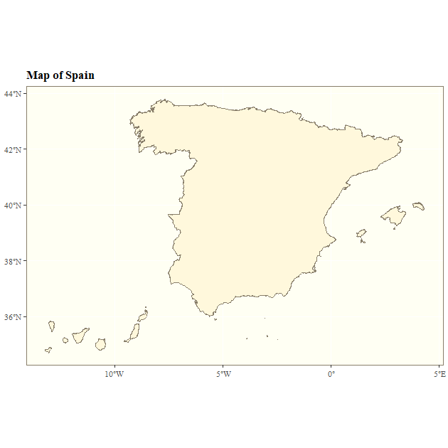
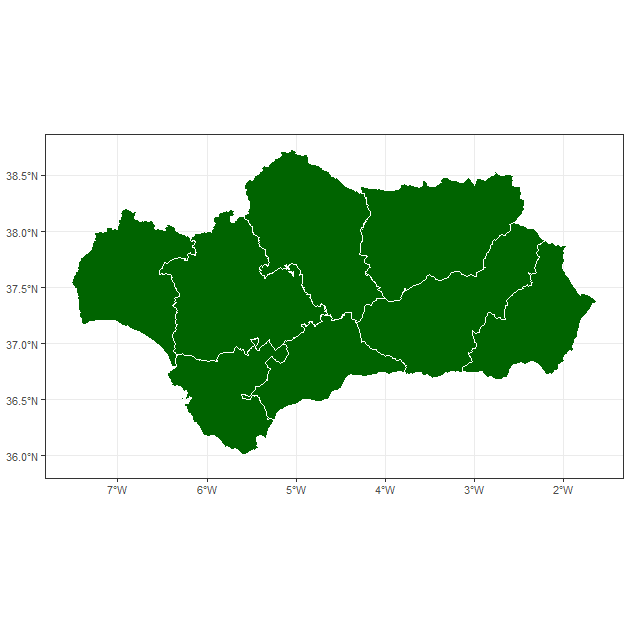
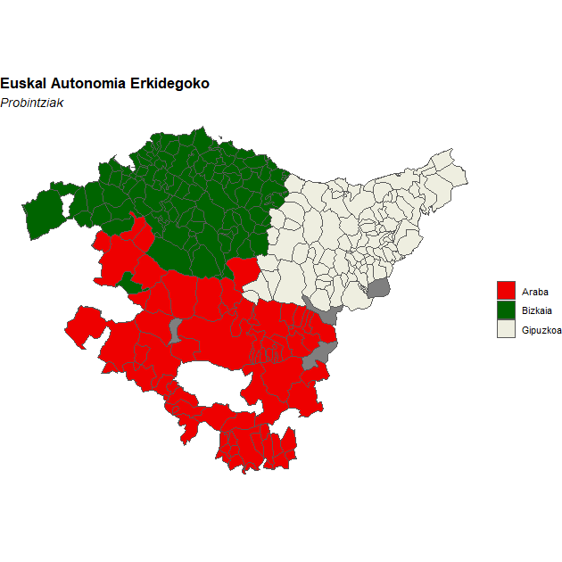
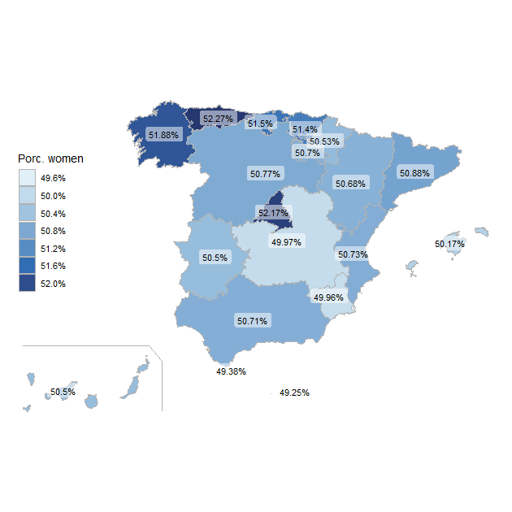
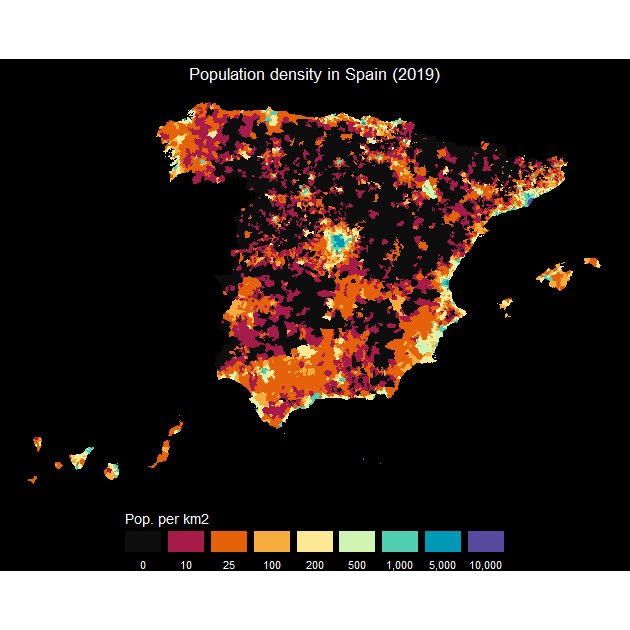
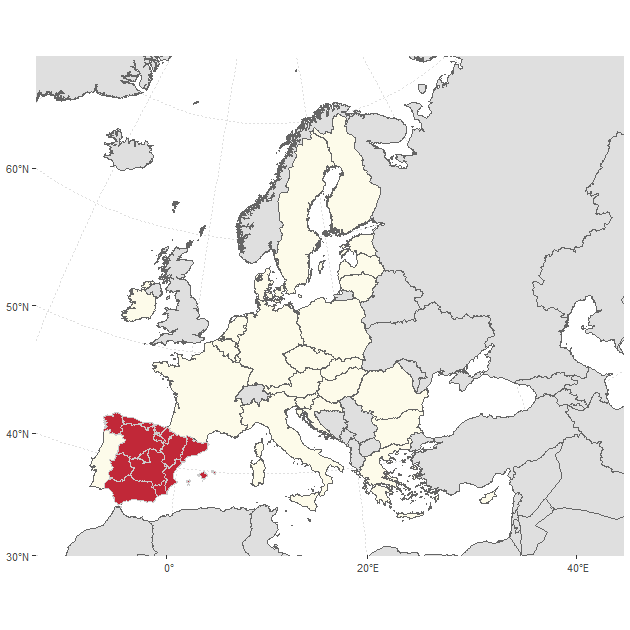
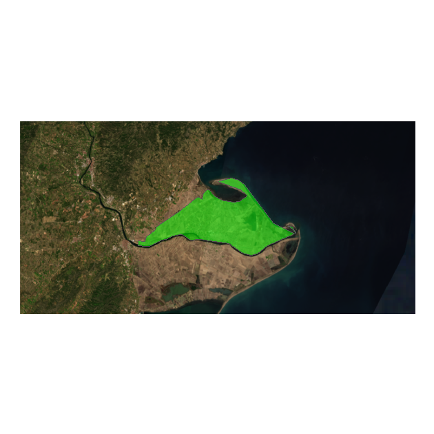

Introduction
Full site with more examples and vignettes on https://ropenspain.github.io/mapSpain/
mapSpain is a package designed to provide geographical information of Spain at different levels.
mapSpain provides shapefiles of municipalities, provinces, autonomous communities and NUTS levels of Spain. It also provides hexbin shapefiles and other complementary shapes, as the usual lines around the Canary Islands.
mapSpain provides access to map tiles of public organisms of Spain, that can be represented on static maps via mapSpain::esp_getTiles() or on a R leaflet map using mapSpain::addProviderEspTiles().
On top of that, mapSpain also has a powerful dictionary that translate provinces and other regions to English, Spanish, Catalan, Basque language or Galician, and also converts those names to different coding standards, as NUTS, ISO2 or the coding system used by the INE, that is the official statistic agency of Spain.
Caching
mapSpain provides a dataset and tile caching capability, that could be set as:
esp_set_cache_dir("./path/to/location")mapSpain relies on giscoR for downloading some files, and both packages are well synchronized. Setting the same caching directory on both would speed up the data load on your session.
Basic example
Some examples of what mapSpain can do:
library(mapSpain)
library(ggplot2)
country <- esp_get_country()
lines <- esp_get_can_box()
ggplot(country) +
geom_sf(fill = "cornsilk", color = "#887e6a") +
labs(title = "Map of Spain") +
theme(
panel.background = element_rect(fill = "#fffff3"),
panel.border = element_rect(
colour = "#887e6a",
fill = NA,
),
text = element_text(
family = "serif",
face = "bold"
)
)
# Plot provinces
Andalucia <- esp_get_prov("Andalucia")
ggplot(Andalucia) +
geom_sf(fill = "darkgreen", color = "white") +
theme_bw()
# Plot municipalities
Euskadi_CCAA <- esp_get_ccaa("Euskadi")
Euskadi <- esp_get_munic(region = "Euskadi")
# Use dictionary
Euskadi$name_eu <- esp_dict_translate(Euskadi$ine.prov.name, lang = "eu")
ggplot(Euskadi_CCAA) +
geom_sf(fill = "grey50") +
geom_sf(data = Euskadi, aes(fill = name_eu)) +
scale_fill_manual(values = c("red2", "darkgreen", "ivory2")) +
labs(
fill = "",
title = "Euskal Autonomia Erkidegoko",
subtitle = "Probintziak"
) +
theme_void() +
theme(
plot.title = element_text(face = "bold"),
plot.subtitle = element_text(face = "italic")
)
Choropleth and label maps
Let’s analyze the distribution of women in each autonomous community with ggplot:
census <- mapSpain::pobmun19
# Extract CCAA from base dataset
codelist <- mapSpain::esp_codelist
census <-
unique(merge(census, codelist[, c("cpro", "codauto")], all.x = TRUE))
# Summarize by CCAA
census_ccaa <-
aggregate(cbind(pob19, men, women) ~ codauto, data = census, sum)
census_ccaa$porc_women <- census_ccaa$women / census_ccaa$pob19
census_ccaa$porc_women_lab <-
paste0(round(100 * census_ccaa$porc_women, 2), "%")
# Merge into spatial data
CCAA_sf <- esp_get_ccaa()
CCAA_sf <- merge(CCAA_sf, census_ccaa)
Can <- esp_get_can_box()
ggplot(CCAA_sf) +
geom_sf(aes(fill = porc_women),
color = "grey70",
lwd = .3
) +
geom_sf(data = Can, color = "grey70") +
geom_sf_label(aes(label = porc_women_lab),
fill = "white", alpha = 0.5,
size = 3,
label.size = 0
) +
scale_fill_gradientn(
colors = hcl.colors(10, "Blues", rev = TRUE),
n.breaks = 10,
labels = function(x) {
sprintf("%1.1f%%", 100 * x)
},
guide = guide_legend(title = "Porc. women")
) +
theme_void() +
theme(legend.position = c(0.1, 0.6))
Thematic maps
This is an example on how mapSpain can be used to beautiful thematic maps. For plotting purposes we would use the ggplot package, however any package that handles sf objects (e.g. tmap, mapsf, leaflet, etc. could be used).
# Population density of Spain
library(sf)
pop <- mapSpain::pobmun19
munic <- esp_get_munic()
# Get area (km2) - Use LAEA projection
municarea <- as.double(st_area(st_transform(munic, 3035)) / 1000000)
munic$area <- municarea
munic.pop <- merge(munic, pop, all.x = TRUE, by = c("cpro", "cmun"))
munic.pop$dens <- munic.pop$pob19 / munic.pop$area
br <-
c(
-Inf,
10,
25,
100,
200,
500,
1000,
5000,
10000,
Inf
)
munic.pop$cuts <- cut(munic.pop$dens, br)
ggplot(munic.pop) +
geom_sf(aes(fill = cuts), color = NA, lwd = 0) +
scale_fill_manual(
values = c("grey5", hcl.colors(
length(br) - 2,
"Spectral"
)),
labels = prettyNum(c(0, br[-1]), big.mark = ","),
guide = guide_legend(
title = "Pop. per km2",
direction = "horizontal",
nrow = 1,
keywidth = 2,
title.position = "top",
label.position = "bottom"
)
) +
labs(title = "Population density in Spain (2019)") +
theme_void() +
theme(
plot.title = element_text(hjust = .5),
plot.background = element_rect(fill = "black"),
text = element_text(colour = "white"),
legend.position = "bottom"
)
mapSpain and giscoR
If you need to plot Spain along with another countries, consider using giscoR package, that is installed as a dependency when you installed mapSpain. A basic example:
library(giscoR)
# Set the same resolution for a perfect fit
res <- "03"
# Same crs
target_crs <- 3035
all_countries <- gisco_get_countries(
resolution = res,
epsg = target_crs
)
eu_countries <- gisco_get_countries(
resolution = res, region = "EU",
epsg = target_crs
)
ccaa <- esp_get_ccaa(
moveCAN = FALSE, resolution = res,
epsg = target_crs
)
ggplot(all_countries) +
geom_sf(fill = "#DFDFDF", color = "#656565") +
geom_sf(data = eu_countries, fill = "#FDFBEA", color = "#656565") +
geom_sf(data = ccaa, fill = "#C12838", color = "grey80", lwd = .1) +
# Center in Europe: EPSG 3035
coord_sf(
xlim = c(2377294, 7453440),
ylim = c(1313597, 5628510)
) +
theme(
panel.background = element_blank(),
panel.grid = element_line(
colour = "#DFDFDF",
linetype = "dotted"
)
)
Working with tiles
mapSpain provides a powerful interface for working with imagery. mapSpain can download static files as .png orjpeg files (depending on the Web Map Service) and use them along your shapefiles.
mapSpain also includes a plugin for R leaflet package, that allows you to include several basemaps on your interactive maps.
The services are implemented via the leaflet plugin leaflet-providersESP. You can check a display of each provider on the previous link.
Note that When working with imagery, it is important to set moveCAN = FALSE on the esp_get_* functions. See Displacing the Canary Islands on help("esp_get_ccaa", package = "mapSpain").
An example of how you can include tiles and shapes to create a static map:
# Get Deltebre - Municipality
delt <- esp_get_munic(munic = "Deltebre")
# Base PNOA - Satellite imagery
PNOA <- esp_getTiles(delt,
type = "PNOA",
zoom = 11,
bbox_expand = 1.5
)
ggplot(delt) +
layer_spatraster(PNOA) +
geom_sf(fill = "green", alpha = 0.5) +
theme_void()
Site built with pkgdown 1.6.1.
Template by Bootstrapious . Ported to pkgdown by dieghernan.